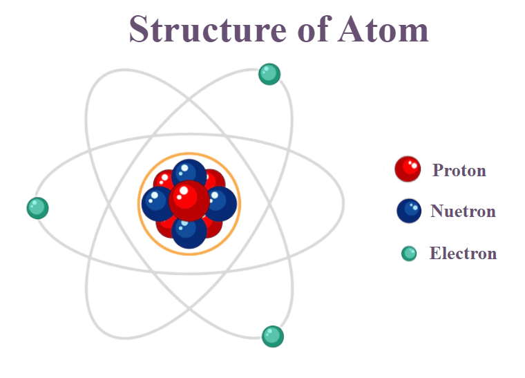

| Level |
Description and Detail |
Image |
Example |
Size |
Atom |
- Smallest level of
organization, what
everything is made of. - Atomic bombs and nuclear
power plants split large
atoms into smaller ones.
|
 |
An atom of the
element Carbon (C) |
100s of picometers (10^-12
meters, TINY!) or 0.1 - 0.5
nanometers |
Molecule |
- Groups of atoms and
smallest unit of most
chemical compounds. - You can view molecules with
an electron microscope.
|
|
Two hydrogen atoms
and one oxygen atom
form a water
molecule (H2O) |
a few angstroms (Å) |
Macromolecule |
- A very large organic
molecule composed of many
smaller molecules. - The DNA macromolecule
contains the code needed to
create copies of organisms
like humans.
|
|
Dna, Lipids |
100 -10,000 angstroms (Å) |
Organelle |
- Specialized part of a cell,
like an organ would be to an
organism. - Mitochondria are considered
organelles and generate
energy for cells using ATP.
|
|
Chloroplasts,
Mitochondria |
1-10 micrometers (µm) |
Cell |
- Smallest unit of life that can
function independently. - Single-cell organisms
(Protozoa) are visible in
regular microscopes,
although they are mostly
transparent and need to be
stained to be seen in full.
|
|
Protozoa (amoeba,
paramecium),
specialized cells
(muscle cells, blood
cells) |
1 - 100 micrometers (µm) |